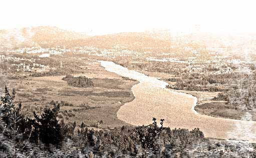
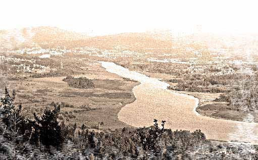

Sitúase no sur da provincia da Coruña. Pertence á Comarca do Sar, composta polos concellos de Padrón, Dodro e Rois.
Polo leste limita con Rianxo, polo norte cos concellos de Rois e Lousame, no oeste esáa o concello de Padrón e polo sur, o río Ulla no lugar que se funde coa ría de Arousa, fronteira natural coa provincia de Pontevedra.
O concello divídese en tres parroquias: San Juan de Laiño, San Julián de Laiño e Santa María de Dodro. Conta cunha poboación de 3029 habitantes no ano 2009. Conta cunha superficie de 36,12 km².
As vinte e seis aldeas que configuran este concello distribúense en 3 parroquias:
San Juan de Laíño, Laíño e Dodro.
PARROQUIAS:
Santa María de Dodro , parroquia que se localiza no leste do concello de Dodro, de extensión 7,20 quilómetros cadrados. Ten sete aldeas: A Igrexa de Dodro, Dodriño, Lestrobe, Revixós, Susavila, Vigo e Cancela Abrea.
San Julián de Laíño, parroquia cunha superficie de 17,18 quilómetros cadrados. Localizada no centro do concello. Comprende as aldeas da Igrexa, Eiró,
Manselle, Paizal, Pexegueiro, Reboiras, Rial dá Lagoa, Rialiño, Sar, Tallós, Tarrío, Traxeito e Muronovo.
San Juan de Laíño é unha parroquia que se localiza no oeste do concello. As súas aldeas son: A Devesa, Bexo, Bustelo, Castro, Imo e Teaio. A súa extensión é de 11,70
quilómetros cadrados. Esta parroquia formaba parte da de S. Julián pero os veciños quixeron separarse formando unha nova parroquia en 1763, en 1756 xa se construía a igrexa de S. Juan.

 
